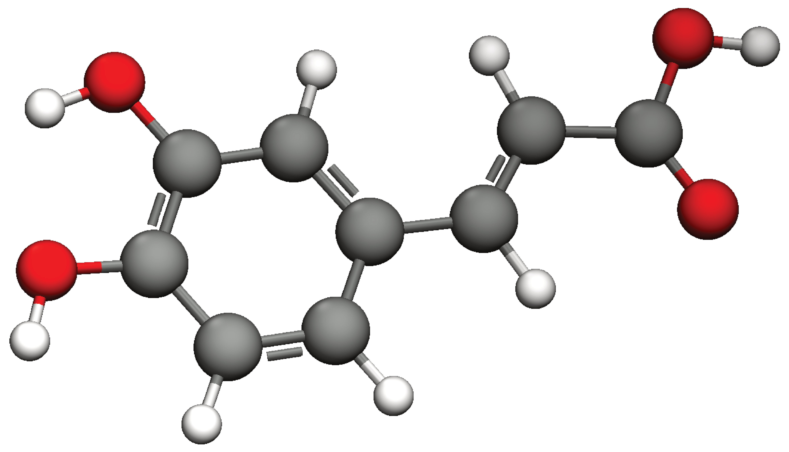

Polyphenolic Antioxidants
(Master Thesis / PhD Thesis)
When present for a sustained length of time, radicals cause substantial damage to biological
components such as lipids, carbohydrates, and proteins.
Several studies have linked the occurrence of different chronic diseases to the continuous
oxidative stress caused by them.
Plants have long been used in traditional Chinese medicine, Ayurveda, and even shamanic for
their medicinal properties.
According to research, they are rich in polyphenolic compounds, which exhibit antioxidative
activity.
With computational chemistry methods it is now feasible to investigate mechanisms of action
and properties resulting in the aforementioned positive impact on health.

2021
2020
Education
i reszta cudow z CV